First Entry, Starting to gather different moodboards and ideas. Currently thinking about the role of symbols and iconography - and their place in visual storytelling. The brief doesn't specify the Cave2 but its a unique experience to design for such a space.
Current thinking is around liminel type spaces, mostly as they are mundane in nature but often refelction of the society they are in often aehsteticaly unpleasing as they are utility driven, being utility driven having repetition of harsh geometric shapes would not only help with asset construction, it was leading down an interesting path surrounding what makes a space visually comforting or discomforting. Not just as 'hostile' architecture but architecture that is so devoid of culture it becomes strangely foreign feeling. These places really set my admitely high baseline anxiety on edge.
Moodboard - Ideation
Entry 2
Interested in the science behind pattern glare and cognitive overload. Especially in digital environments as they can be used as a tool for learning and or training Pilots, Mining, Sparkies plethera of high risk simulatiors.
These types of projects that are used in learning and so visual heirachy and clarity is paramount though from what I see online about these projects (likely due to tight deadlines) the graphical and audio quality is often pefunctary.
Some papers on the subject "How hard is it really" Seyderhelm and Blackmore (2023) -In Simulation & Gaming, Seyderhelm and Blackmore (2023) explore how different gameplay challenges influence cognitive load.
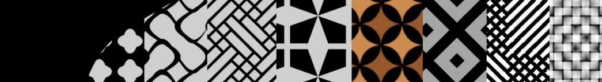
"A Neurological basis for visual discomfort"(Wilkins et al., 1984)
Pattern glare is the cortical hyperexcitability triggered by certain high-contrast spatial frequencies (Wilkins et al., 1984; Monger et al., 2015) very interesting that is a wholly measurable response.
I had never really explored this side of environment art and it intrigued me not only from a visual design standpoint but as a potential storytelling device. 'This is the chill comfort version' vs 'This is the intense one'
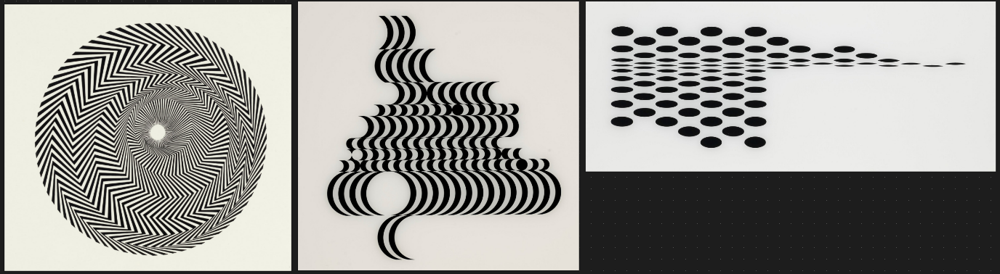
Bridget Riley has some great peices on this
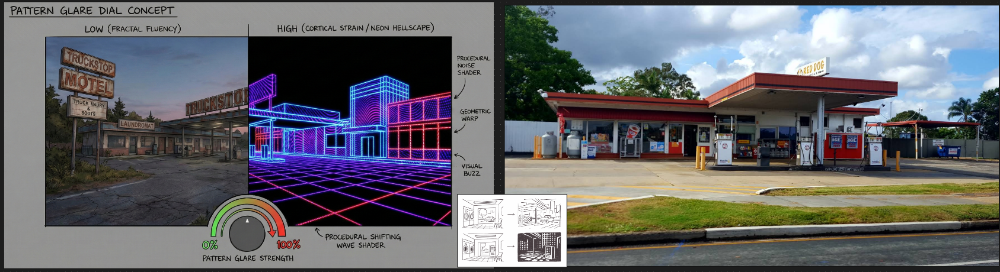
In parallel to this focus had shifted to commercial decay, not as a dark or macabre interest but more when creating an immersive environment it could be potentially too overwhelming. Can always go extreme then dial it back, user controlled intensity or fequency.
Entry 3
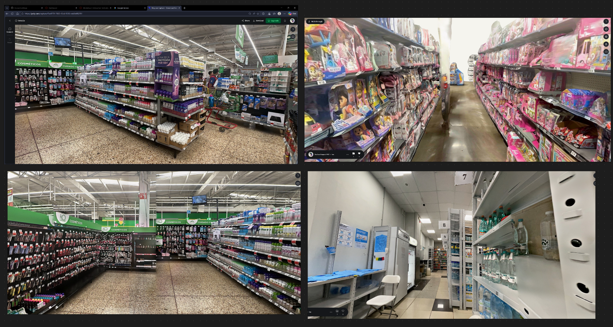
Looking at supermarket scans and panoramic shots, liminal spaces aren't exactly underexplored in gaming or media however are a great source of intentioned visual noise (shelves shouting for your attention). Concerned this space might seem too mundane. I know I don't want to stand in a supermarket for long but was unsure of why.
Week2 - Analysis the Why
Entry 1
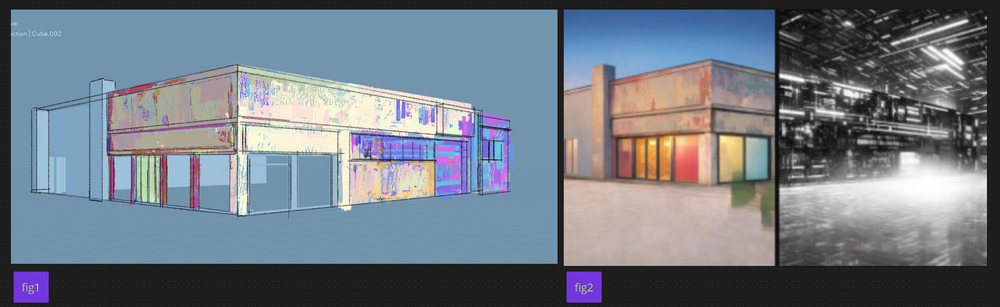
Fig2: AI artwork of one of my drawings (left)
Leading Idea - Task1
The experience begins in a seemingly mundane commercial interior. As the user interacts—via a physical dial or biometric sensors—the "pleasant" vibes dissolve into "dark noise". The modular walls, built in Blender and rendered in Unreal Engine, will shift and distort, using dynamic textures to create a 320-degree field of overwhelming geometric static. TouchDesigner will facilitate the visual programming required to bridge these biometric inputs with the environment’s shifting parameters.
The world is modular and built around a single commercial building, but the behaviour of the space changes depending on how the player interacts with it.
Two key systems define this version:
The Radio Mechanic (Exterior Interaction)
Instead of the Micro:bit, the player interacts with a radio dial.
Tuning the radio shifts the environment between different “channels”:
pastel suburban calm
neon geometric overload
Ikeda‑inspired data patterns
procedural noise states
flickering fluorescent lighting
sound‑reactive distortions
Confronting zone
More abstract in nature
gaussian splat overlays
radial symmetry / panopticon‑like distortions
pattern glare
procedural material flicker
trigger‑based transitions
sound‑driven shader behaviour
This creates a clear distinction between the two units:
Entry 2
Exploring Shadertoy and GLSL and the testing if AI can convert to HLSL
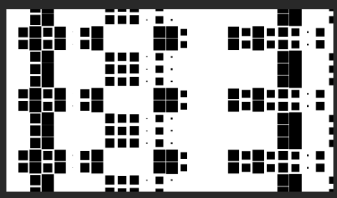
Shader toy
// Ryoji Ikeda / Non-Place "The Watchers" (V2)
// Persistent Squares, Slow Blinks, Heavy Outward Pulses
float hash(vec2 p) {
p = fract(p * vec2(123.34, 456.21));
p += dot(p, p + 45.32);
return fract(p.x * p.y);
}
void mainImage( out vec4 fragColor, in vec2 fragCoord )
{
// 1. Setup Coordinates
vec2 uv = fragCoord / iResolution.y;
float gridDiv = 8.0; // Size of the shelf 'cells'
// 2. Interaction Control (Mouse X simulates Social Load)
float socialLoad = iMouse.z > 0.0 ? iMouse.x / iResolution.x : 0.15;
vec3 bgColor = mix(vec3(0.9, 0.95, 1.0), vec3(1.0), socialLoad);
float finalMask = 0.0;
// 3. Expanded Neighbor Loop (5x5 Grid Check)
// This allows the radiating lines to travel much further across the screen
for(float y = -2.0; y <= 2.0; y++) {
for(float x = -2.0; x <= 2.0; x++) {
vec2 neighborOffset = vec2(x, y);
vec2 id = floor(uv * gridDiv + neighborOffset);
vec2 gv = fract(uv * gridDiv) - 0.5 - neighborOffset;
float h = hash(id);
// IRIS SPAWN LOGIC:
// The square wakes up if its random seed is lower than the Social Load
if (h < socialLoad) {
// A. THE SLOW BLINK
// High power (60.0) means it stays open 95% of the time, snapping shut slowly
float blink = pow(sin(iTime * 0.8 + h * 6.28) * 0.5 + 0.5, 60.0);
float irisSize = 0.15; // Fixed square size
float currentHeight = irisSize - (blink * irisSize);
float iris = step(abs(gv.x), irisSize) * step(abs(gv.y), currentHeight);
finalMask = max(finalMask, iris);
// B. THE THICK, RADIATING PULSES
// Square distance metric keeps the radiating lines perfectly geometric
float dist = max(abs(gv.x), abs(gv.y));
// Create a continuous outward wave.
// Multiply 'dist' to add more rings, multiply 'iTime' to change speed.
float wave = fract(dist * 2.0 - iTime * 0.4 - h);
// step(0.85, wave) means the line takes up 15% of the wave space (much thicker)
float pulse = step(0.85, wave);
// Fade the grid lines out smoothly as they travel away from the center
pulse *= smoothstep(1.8, 0.0, dist);
finalMask = max(finalMask, pulse);
}
}
}
// Output: Black geometric ink on White/Pastel background
vec3 col = mix(bgColor, vec3(0.0), finalMask);
// Blinding white intensity boost at extreme load
if(socialLoad > 0.9) col *= 1.2;
fragColor = vec4(col, 1.0);
}
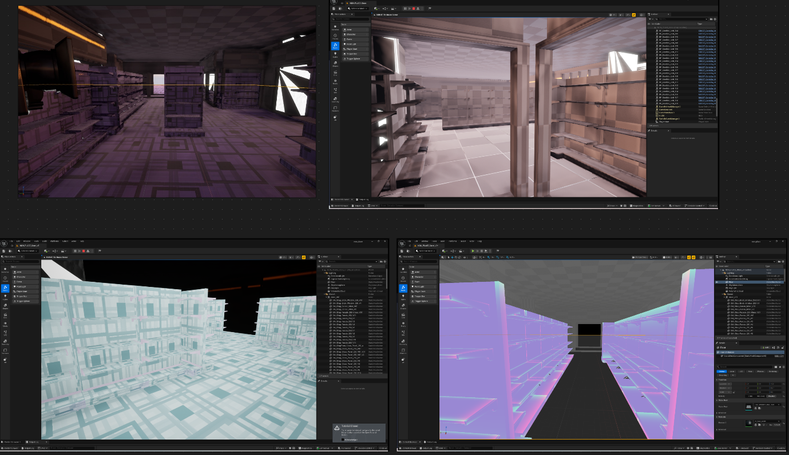
Early testing of materials.
Squishy Heart sensor:
Briefly explored user movement controlling an abstract or 'beating heart' with a Geometry nodes -> Unreal workflow. More movement or biometrics could cause a speed up or slowdown getting the dopamine going, effectively driving between morph targets, essentially 'driving' the beating heart.
User would be 'in' the beating heart/geometric animation (mesh SFD vertex animation but controlled on a 0-1 scale)
However that is just a technical showcase and doesn't really talk to the purpose of the interaction. Something that has become a key question going into Weeks1 learning materials and readings (Penny)
Shadertoy is a really powerful way to expirement with materials in OpenGL, which ports over well to HLSL (AI does a good job converting this over)
Shaders in this small environment seem relatively cheap on my system. They are calculated persurface so it could really hurt being performant.
Textures could be a flip-book though that would be finicky (although cheap)
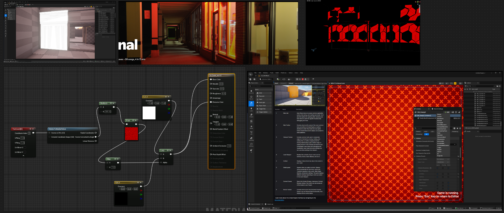
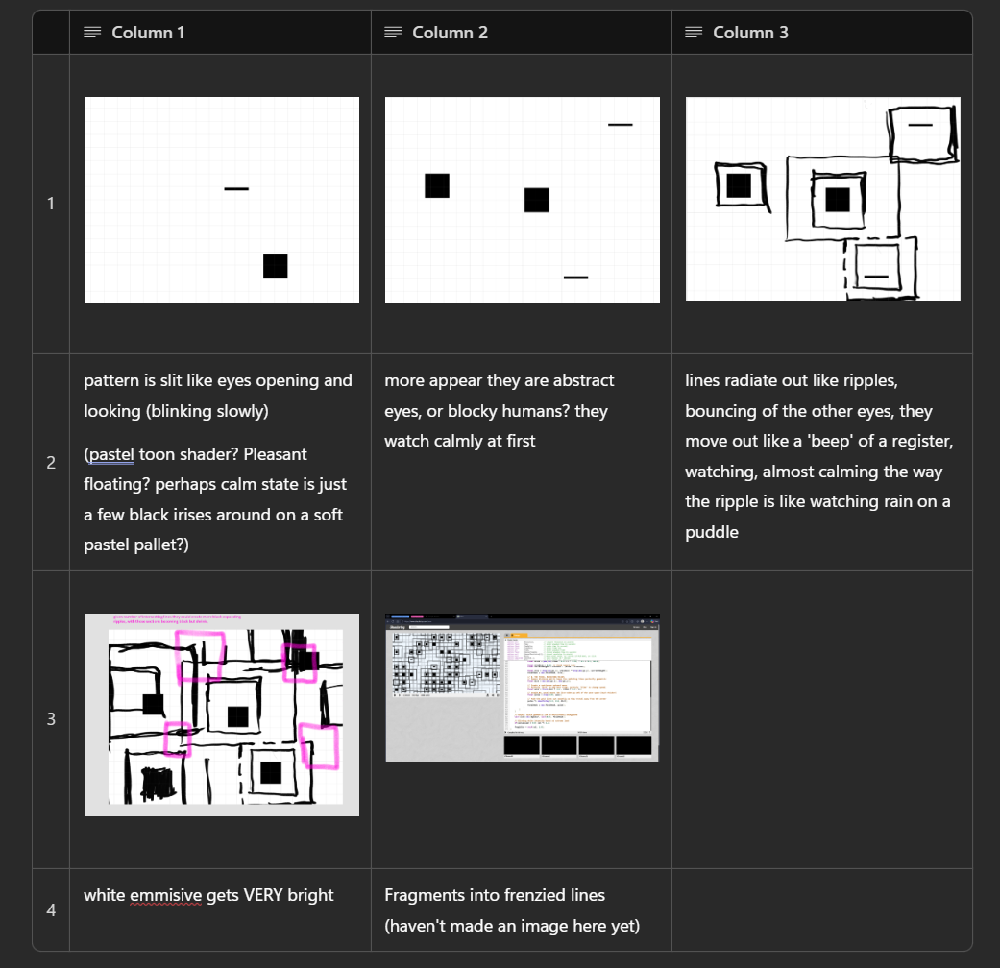
Week 3 - The What
Entry 1
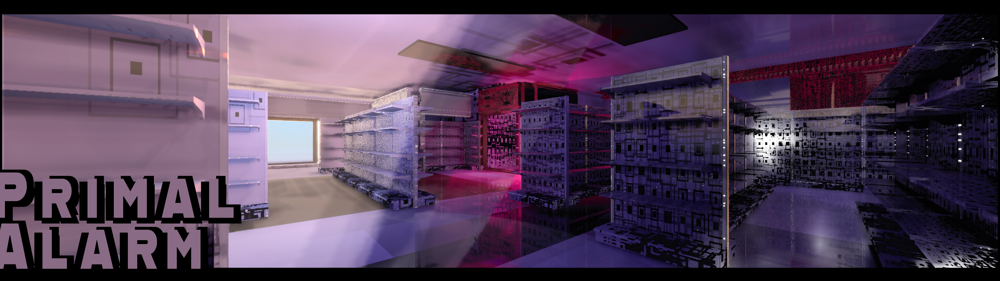
Prial Alarm Final concept - Task1
Keeping in mind the following information from
The "Trigger" Stimuli: Stripes with a spatial frequency of about 3 cycles per degree (roughly the frequency of a page of single-spaced text held at normal reading distance) are the most common triggers.
Really engaging with the complete stack for Task1 submission. Mapping out the system, jumping ahead to Mediapipe it almost certainly is the tool I will be using along with touch designer.
Entry 2
Friday’s lecture with Dr. T. Gifford was a great reality check. My initial pitch was getting tangled with too many ideas and not enough process or ideation on the actual interaction itself which is the crux of the entire project.
Going forward Why is this happening to the user, and what is it actually expressing? The pure science of it was making the concept rigid and stripping away the expressive potential.
Seeing another student's work on Anxiety resonated with me, particularly the concept of actively having to 'control' and manage anxiety. Currently "Non-Place" supermarket from a generic study in visual fatigue into a direct emulation of an overstimulated mind. The modern struggle of masking anxiety is incredibly relatable, and the sterile, liminal environment of an endless supermarket is the perfect stage. It captures that specific, suffocating paradox: feeling completely isolated and invisible, but the second your internal anxiety flares up, the space becomes hostile and it feels like all eyes are suddenly on you.
This thematic shift gives my technical mechanics a solid conceptual backbone. The additive effect of an anxious mind perfectly mirrors a compounding data-overload. To simulate this "chaotic static," with the aggressive, Ryoji Ikeda-style geometric shaders. By mapping these expanding black squares and the persistent, blinking "Watcher" irises in world space, the environment itself becomes the antagonist. Current idea is the more movement detected the more a person has to stay still. The room settles, once that is detected.
Entry 3
Able to test and explore the Cave2 during the workshop. My current touch designer test worked and reacted to the camera already setup (high downward facing webcam)
Mediapipe was tracking well key insight is only one skelton is tracked at a time.
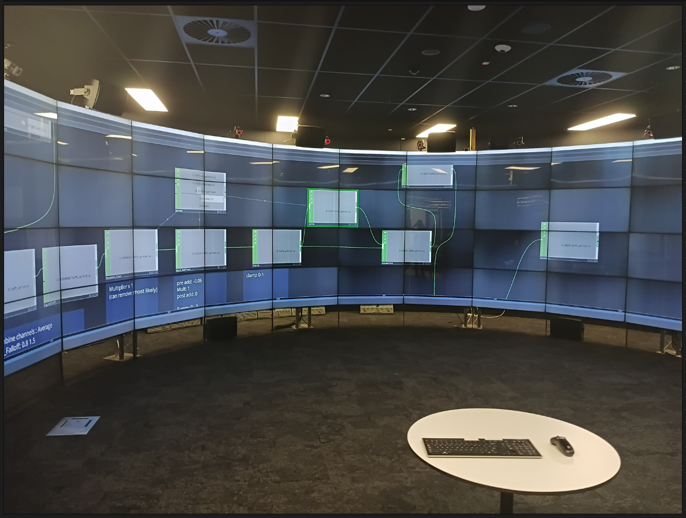
02Weeks 4–6 · Grounding the language
Week 4
Entry 1
measuring the crowd
A core part of anxiety in non-places is sensory: the visual noise of brands and products, the beeps of registers, trolleys clanging. Those are external. But anxiety also has an internal dimension — the lone struggle, the work of keeping up appearances — that's harder to externalise.
The ideal version of the project currently called 'Hello Stranger' makes both visible at once. Each person in the CAVE2 spawns a proximity sphere — a small bubble of "okay" projected onto the environment around them. Inside their bubble, the world is calmer. Outside it, in the periphery, the corruption builds. This mirrors the actual experience: when you're anxious, you tunnel-vision. Your immediate field shrinks to a manageable bubble while the edges of perception fill with movement and threat.
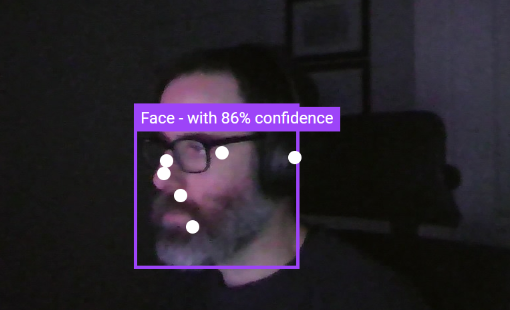
Each person's movement controls the size and integrity of their own bubble. More people in the space pushes up the global SocialLoad — anxiety grows faster — but each person can only manage their own bubble. The pressure is shared, the agency isn't. Visitors feel the room get worse without knowing why. They might assume it's about them.
At full overload, the bubble itself starts failing — the edges close in, until the periphery dancing is all there is. The light snuffs out. There is no calm space left, only the management of how fast it collapses.
It feels like you're suffocating.
(equirectangular)
Projecting at this aspect ratio could be difficult. 9:1 doesn't capture a 320 panaromic like I had hoped.
16:9 might work better here even if its not 'correct' ratio
HighResShot 8000x500
Very valuable command from unreal!
Week 5
Entry 1
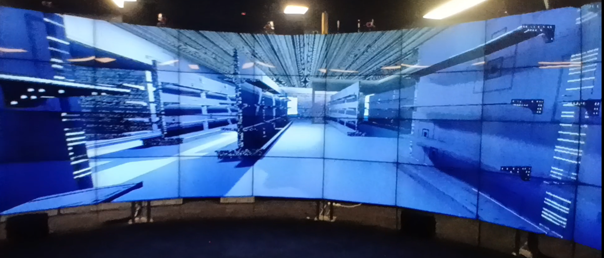
The second test in Cave2 was purely to test if the cave computer could run a packaged build of the project as converting it to 5.5 was suprisingly hard given a shift to post process effects pivot.
Continuing on 5.7 does have risk (can't troubleshoot on the spot)
However I might ask Dr Toby Gifford about the possibility of upgrading the engine RE: Cave2 , certainly in an ideal world the package works quite well and is the only thing needed to execute.
Since the OSC reciever worked, I began thinking more about the environment and essentialy the design brief, what am I trying to achieve, why is this interesting for the Cave2, is it flexible, who is my audience.
The last is an interesting one, the more I look into anxiety and listen to podcasts on the matter it is a suprisingly isolating thing given how prevelant it is and does not discriminate accross any level of society or walk of life.
This can create a thread of connection and community about unseen struggles but how commonalities in visual discomfort are shared, even just the cool engineering of these types of projects but also for me is purely awareness. Awareness and exploring the mechanisms of Anxiety maybe even admitting it as an issue for myself is selfish, however I don't know how to design something that doesn't hav
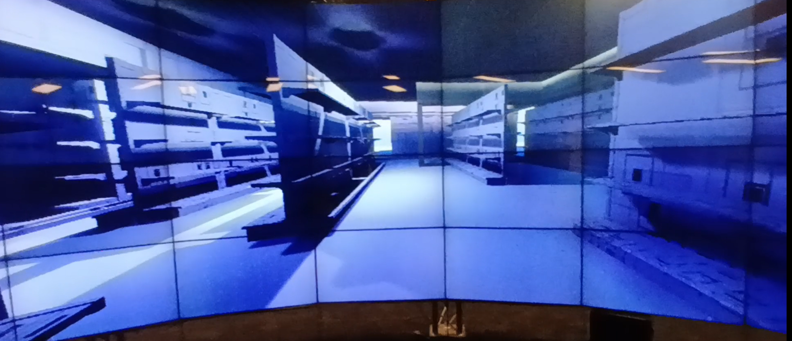
Having the stack working brought me back to the visuals faster than I was anticipating. Currently it isn't o not Overwhelming, or creating visual strain. I liked the fragment shader but as electric stressors, However it wasn't really an interaction if there is a barely perceptable interaction, I doubt it would be discovered organically.
I wanted to ground the visual language and simplify it, Bridget Riley has some stunning examples which really confirmed to me the idea of zebra striping as the effect - e.g the scene becomes discombobulating
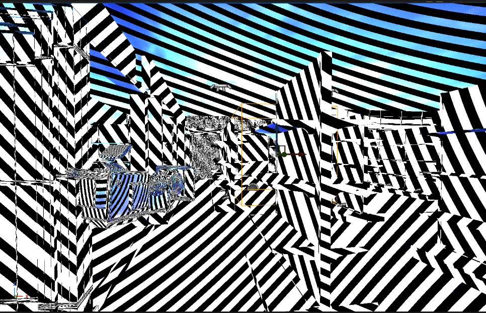
So this works, and is interesting how migrane inducing this effect could be but I need to clarify my messaging and not throw too many ideas into the installation, being simple should be a core tenant.
Zebra striping was easy enough to this does make sense as pershader would be exensive, but since the poles are created and the banding generated it should extend beyond the actual material (what the shop is made of) to something a bit more inexplicable there but not there in the world invading a persons perception of the world as an emotional state, not a literal this is what I 'see' but this is what I feel.
Creating this in Unreal took some time however solved an interesting problem that had been creeping up, where the environment is that zebra striping discomfort comes from movment. I really do not want to have a looping camera as that turns it into more of a theme park ride, where I want an exploration of a synthetic space.
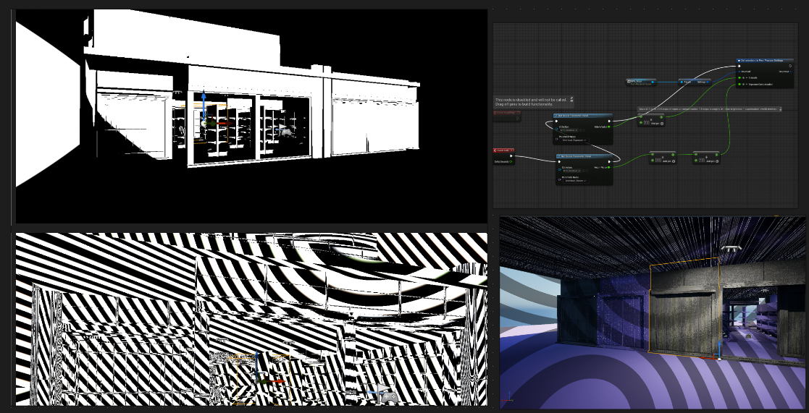
When testing this on a TV (22nd I was unable to test at Cave2) stillness wasn't uncomfortable but the poles moving are, concentric bands of influence really fit with more organic human energy, these spheres of influence or bands could crunch or tighten with frequency and intensity based on the amount of faces detected in a scene.
This has a comfortable nod to the pressures of people witnessing you in this environment adds pressure, but is a spiral of often 'imagined' things in the periphy a freeze response.
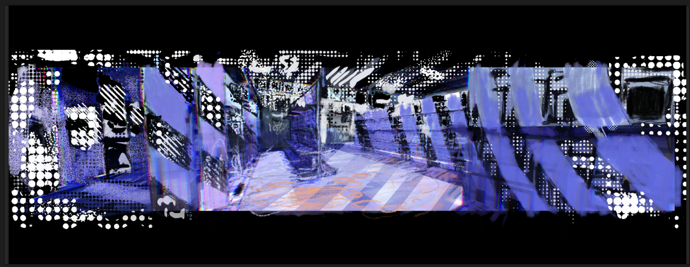
Idrew the scene at maximum overload to see what was happening visually, and noticed the calm zone in the centre I'd painted instinctively — the design rearranged around that observation
Doing screencapture draw overs are a quick way to try and develop the visual language. Interestingly it has retianed a lot of elements that I thought would be placeholder (pastel purple substrates) but these kind of layers are interesting in hte way the binary 'bleeps' and 'blops' are simply squares, but create a foggy depth as the 'pulse' radiates out and fades (computer, shifting binary pressures of money) they appear on the rooms surface, but are only really revealed by the anxiety banding which is more human and not of the this space but more esoteric in nature, moving it more towards these things are there, but how much they affect different people varies.
Experimenting a lot with softer water ripples, but when drawing over the captures it really did become clear that less is more, trying to throw to many interactions or visual language in one space would just be confusing.
Creating a drawover was interesting as it showed the core of the interaction really is holding ground with an aproximation of a persons position in the Cave2 - what does that look like?
This sketch has a lot going on, but the top opressive dark roof, start whites of halftone lights on the environment and perifery does reveal parts of the Ikeda eyes fragmenting below - the beeps, fluroscent builbs, pressure to get in, perform get out. The box pulses aren't bad entities watching, they just are beeps and boxes, but the pastel world we hold onto is a kind of banal respite but being clear that movement is the answer as simple as that is, the more the stress the more you have to fight it but it is managable.
Entry 2
Really taking the time to learn some of the math and theory behind a desired effect has been really insightful, but I find I really have to write it down documenting in a journal for it to really stick.
Generally I can ask AI or online how to achieve a radiance mask which will be the centre 'calmish' grounded substrate of Anxiety Mart, attempting to capture the wear or grime is likely the most comfotable fractals you can look at, but also talk to the passage of time.
Currently unsure of how to pulse this mask.
Pastl substrate material has been created but not finalised however the space itself doesn't need to be detailed or overworked especially when the 'dirty anxiety' or 'stressors' are very noisy in themselves.
In conclusion focusing on a 'safe' zone with better feedback and clearer visual language is the best call here going forward.
Week 6
Entry 1
The Unreal material that drives the postprocess is getting highly layered. Progress has been steady, slowly shifting the effect along.
Experimenting, thinking much more about the user interaction again. Possibly a simple pulse or wobble on the 'calm' focus view would be helpful.
Will also need to look at controlling lights in Unreal with social load as well as a movement or presence value from Touchdesigner to drive the safe zone view.
03Weeks 7–10 · Building the pipeline
Week 7
Entry 1
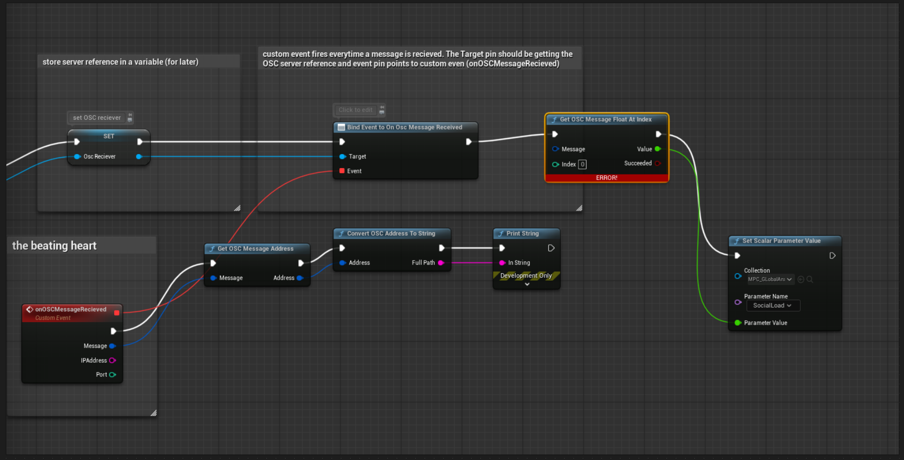
Covering OSC in detail from the workshop was fascinating, with Dr Toby Giffords help setup a Touchdesigner file using OSC out CHOP ticks a message to localhost (127.0.0.1) being UDP this makes transfer very fast. Also using a DAT callback to visualise the data. This makes it easier to visualise exactly what is being communicated and where (eg a /SocialLoad 0.49385485 is a test from LFO)
Expanding on the Unreal able to create an OSC Blueprint to have an OSC server - get the float, print the string and control the MPC (Material Property Container?). Having it drive a material in realtime was a great milestone.
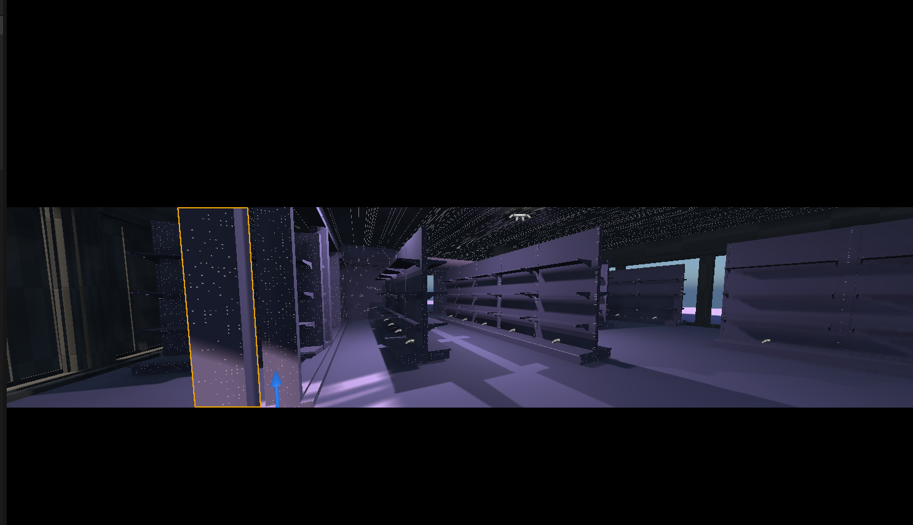
Two separate OSC messages makes the most sense:
/presence (0 or 1) — gates whether the simulation runs at all
/socialLoad (float 0→1) — drives how overwhelming the material gets
The "always pulsing" baseline lives entirely in the material itself (Time node × sine wave). OSC only modulates that pulse — it doesn't trigger it. So the heartbeat is always there, even when no one's in the room. SocialLoad just controls how agitated the heartbeat is.
Week 8
Entry 1
OSC pipeline, getting it working
Started building the actual Unreal Blueprint. My OSC receiver was technically working — messages were arriving — but I'd lost my print messages and the float wasn't getting into the Material Parameter Collection.
**What each Blueprint node actually does:**
- `Event BeginPlay` → `Create OSCServer` — spins up the listener at startup
- `SET Osc Reciever` — stores the server reference for later
- `Bind Event to On Osc Message Received` — registers the callback
- `onOSCMessageReceived` (custom event) — fires every time a message arrives
- `Get OSC Message Address` → returns the address string like `/socialLoad`
- `Get OSC Message Float At Index` → pulls the actual float value out of the message
Entry 2
Exploring mediapipe today as its the final peice of the puzzel for full end to end functionality
Remembering to externalise the RELEASE tox of media pipe and download the release version.
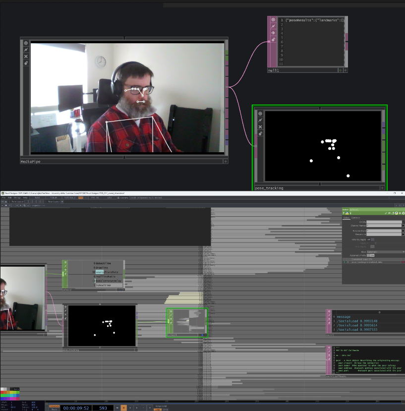
Seeing this realtime skeleton is always super impressive. Initially I wanted to get face data and use that to look for movement (even as a test) I went with wrists and shoulders. After consulting with AI (prompt below)
*Note: Middle mouse button on operators is a lifesaver for viewing this information.
After some testing going to drop the shoulder tracking and just do wrists
left_wrist:[xy] right_wrist:[xy]
this seems to be the most stable at reading movement. If the Cave2 perhaps wrist bands can increase the detetction confidence?
Lag Chop is trying to smooth out the motions which can be jittery. I think it is also a case of a low quality webcam potentially.
Entry 3 — IT WORKS
Full pipeline operational. LFO ramping in TouchDesigner, OSC sending the float, Unreal receiving it, Material Parameter Collection updating, material visibly responding on the supermarket shelves. Watched the SocialLoad value tick down from 0.88 to 0.72 with the material fading from heavy pattern glare to calm.
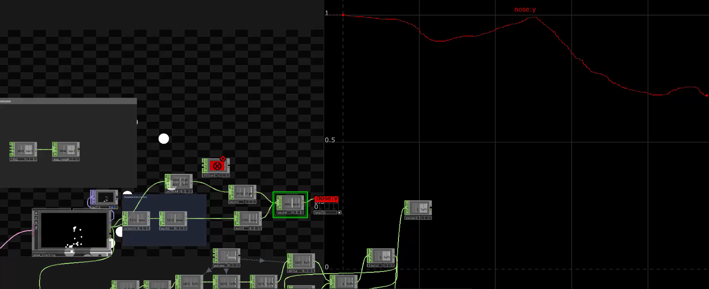
Entry 4 — Mapping the actual experience
Sketched out what the experience should feel like at different SocialLoad values. Not two states (calm/chaos) but a gradient with distinct character at each stage:
0.75–1.0 Full overload — Ikeda-style data noise, geometry fracturing, pulse maxed, all sound layers distorted. Maybe drop text entirely — visuals say enough.
Setting up keybindings in Unreal Level blueprint, these are to control Social Load and other parameters for testing without having to run TouchDesigner in parallel to Unreal, which is very costly on my machine.
Important realisation: this isn't four separate materials. It's ONE material with a SocialLoad input that just looks like these things at different points along the 0→1 range. Same math, same shader, different input number.
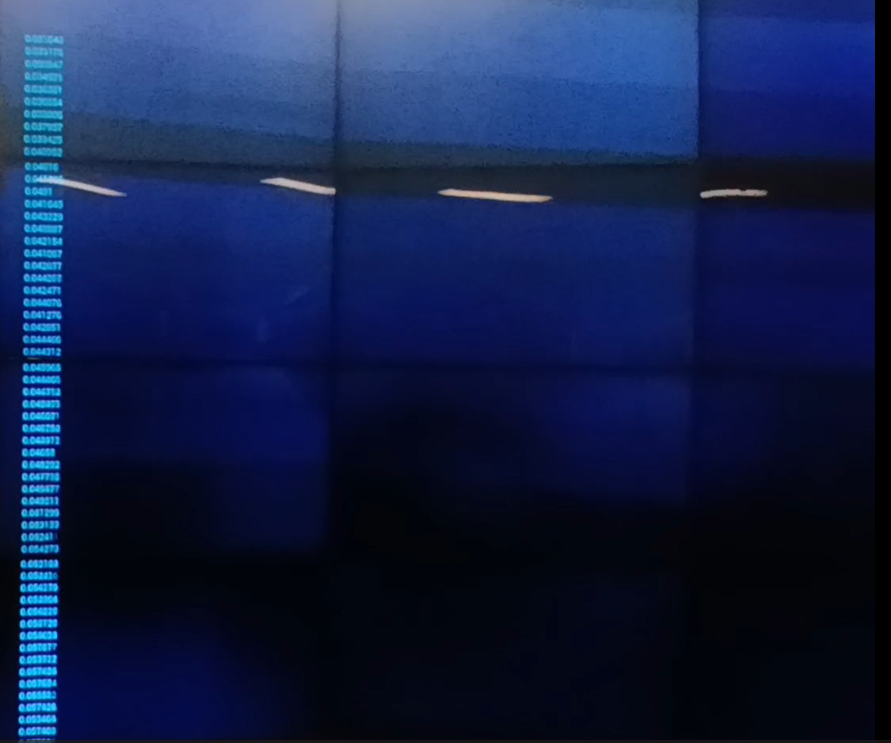
Entry 5
The thing I struggled to articulate but finally got: SocialLoad is always climbing while someone is in the space. Movement doesn't win, it just buys time. It's a bathtub with the tap always running. Movement is pulling the plug — drains some water — but the tap never turns off.
This mechanic IS the metaphor. Anxiety doesn't resolve, it requires constant management. The visitor can't fix the space, only manage it. Stop managing → it escalates conceptually the most honest version of the piece.
Week 9
The value broadcast from Touch needs to be quite steady, Unreal is very powerful at exposing parameters through blueprints and updating variables, values etc. Having SocialLoad drive many Material Parameters has been a highly flexible lifesaver so far.
Pulse speed — Time × Lerp(slow, fast, SocialLoad) → Sine. At 0 the wave cycles slowly, at 1 it's panicked.
Pulse intensity — Sine × Lerp(quiet, loud, SocialLoad). At 0 the pulse barely moves anything, at 1 it's driving the full effect.
Any noise really dulls the intensity effect. Trying to visualise what a pulse or dopamine spike might look like.
Week 10
Entry 1
Feedback from Dr Toby Gifford - nudged me toward thinking about proxitimy bubbles for the users as this would serve as their 'window' into the installation - something I want to try and certainly explore.
An interesting limitation is media pipe only tracks one pose/skeleton as its a single person pose estimation which is a core design constraint I will consider.
Currently it is a 'solo' experience, though multiuser interaction could be possible using another data point, possibly faces.
04Weeks 11–13 · The final push
Week 11
Entry 1
Testing visuals in Blender renders for Task 3 pitch documents. Personally I have found previsualisation the best way to think through the users experience. Likely I will need another value output for /movement or /movepulse from TouchDesigner currently it is a hard balance visual responsiveness and clarity without being too obvious as Im being careful to not gamify the interaction too much. Typically I like to be clear with any instruction though I like the idea of people treating the installation with curiousty and experience.
The postprocess material is becomming quite dense, I paired back the base material to be simply flat. however the pulses and blips do work as an indication of a binary stressor in the scene. Other stressors are kept to the 'Anxious' periphy.
Will look to push the material to be the 'white' band fill and have harsh black lines (will likely need another layer that pushes the edges to white)
The grand grand idea for more pole coordinates tracked by users detected, one skeleton is selected (no control over this mediapipe) However I feel that works if the banding would show and interfer with the pattern intensity values, increasing stripping or even appearing (up to 3) would be interesting group dynamic.
It still holds a lot of relevance as Anxiety, and social anxiety adds to the pressure.
From the previsalations and Cave2 tests the panding isn't as overwhelming as I first thought, I will need to revisit some of the litrature to make sure the final banding is doing its work.
Week 12
Entry 1
Post processing effects are very powerful in Unreal, though using them can tend to dull the effect.
Safezone pocket works, there is a lot of visual information in these layers which means it has to be fairly simple (the effect) otherwise it is lost.
Entry 2
Lerp(rest, peak, SocialLoad)
Week 13
Entry 1
Audio has been implemented but it is a simple mix of Supermarket noises layered into one .wav file.
In reality with more time Audio is such a massive part of the work, recording actual Supermarket audio and layering it in Unreal would be great given more time.
Straight Heartbeat is probably the most effective at increasing pressure.
Ambient sound can get this class in the level Blueprint, currently wired in with Driftspeed and Driftradius as that is the Start of the interacation 'Person Detected'.
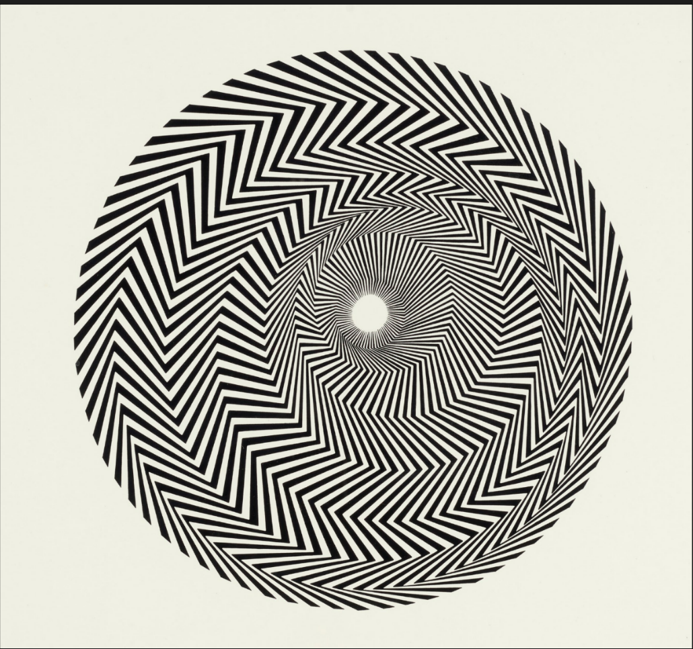
Happy pulse clears the banding, is based on movement intensity.
Entry 2
Testing interaction, unable to drive up to the The Sunshine Coast however Toby Gifford was kind enough to test for me. Feedback was the interaction works (keybindings are hooked up wrong for configuration will need to be fixed).
Movement jumps a lot on the Dopamine pulse, likely the same behaviour of mediapipe losing wrists (jumps around and aproximates which causes a large spike). Will need a way to cut off the high bands of movement however likely fine for now.
05Reflection
Reflection
Reflecting on the project, I'm as glad for what I didn't do as for what I did. The things I'm actually good at — modelling, materials, lighting — are almost comically absent here; there isn't even any UV mapping. The models are crude, and I left them that way on purpose. A detailed, polished environment-art piece would have fought the very layered visual language of anxiety I was trying to build. Flexing those skills would have made the wrong piece.
When I started, my instinct was to make something "cool" as a way to explore new tools (Unreal, Blender geometry nodes) and say "look what I made." In the age of AI that impulse feels less relevant than ever. Being exposed to Simon Penny, to Bridget Riley's optical work, and to other students' thinking pushed me past it, toward actually asking what it means for someone to engage with a digital artwork, but more importantly why.
The project changed dramatically in form, but many of the core ideas stayed surprisingly constant — contrast, pattern density, Ikeda, anxiety. Discoveries along the way kept circling back to the original intent, even as I kept asking myself: what is the intent? The Ikeda-derived blips survived as the beeps and squares of a supermarket: utility-driven, not frightening black and white, a register beep that is supposed to grab your attention. Then against that in the periphy sits the radial banding of anxiety: more human, more circular, more pressure in the environment but not quite of it. The zebra striping makes the floor feel like it's dropping away; you can't anchor. It isn't sad so much as discombobulating — the anxiety turning "dirty" and overwhelming.
That constant question — what is the intent? — kept dragging me, a little reluctantly, into examining my own anxiety. It also made me notice how little thought I'd ever given to my own surroundings, which is a strange thing for a human: that we move through our environments, physical or otherwise, without really stopping to question them. The fluorescent lighting and the unwritten contract of behaviour in these places have always stirred a quiet discomfort in me. Having a personal relationship to anxiety is a hard thing to talk about — mental health is something I'm quick to empathise with in others and quick to scold in myself. If the piece prompts even one person to think "hey, I have this too" — quietly, tucked away in their pocket after the demonstration, that would be a win.
I hope it can open up a little more dialogue about mental health, especially as the pressures of modernity only seem to grow louder. As humans we ought to think about our environment and about joyful connection — otherwise, what is the point of any of it?
06References
References
Augé, M. (1995). Non-places: Introduction to an anthropology of supermodernity (J. Howe, Trans.). Verso.
Ikeda, R. (2007). data.tron [Audiovisual installation].
Ikeda, R. (2008). test pattern [Audiovisual installation].
Monger, L. J., Wilkins, A. J., & Allen, P. M. (2015). Pattern glare: The effects of contrast and color. Frontiers in Psychology, 6, 1651. https://doi.org/10.3389/fpsyg.2015.01651
Penny, S. (1995). Petit Mal [Interactive robotic installation].
Penny, S. (2017). Making sense: Cognition, computing, art, and embodiment. MIT Press.
Wilkins, A. J., Nimmo-Smith, I., Tait, A., McManus, C., Della Sala, S., Tilley, A., Arnold, G., Barrie, M., & Scott, S. (1984). A neurological basis for visual discomfort. Brain, 107(4), 989–1017. https://doi.org/10.1093/brain/107.4.989
Zika, M. A., & Becker, L. (2021). Physical activity as a treatment for social anxiety in clinical and non-clinical populations: A systematic review and three meta-analyses for different study designs. Frontiers in Human Neuroscience, 15, 653108. https://doi.org/10.3389/fnhum.2021.653108
07Concept of record
Hello Stranger
Concept of Record
Interactive CAVE2 installation on social anxiety in non-placesMatthew Bissell — DES307
Premise
A visitor stands inside a 320° wraparound display showing an abstract pastel supermarket — recognisable as a non-place but stripped to its bones. MediaPipe tracks the visitor's body through a webcam. As the visitor stands still, an internal pressure variable (SocialLoad) rises. As the rendered environment registers that pressure, the materials harden into high-contrast Riley-style banding, fluorescent fixtures over-illuminate, chromatic aberration creeps in at the edges, and the room becomes physically uncomfortable to stand in. At the centre of the visitor's view, the room offers a small drifting zone of partial reprieve — a softer area where the pattern breaks up through the weathering and the substrate beneath becomes visible. Movement expands this zone briefly; stillness shrinks it. The visitor cannot escape the pressure, only locate the room's drifting tolerance and try to remain inside it. There is no win state. Recovery is temporary. The piece is a portrait of management, not resolution.
The Argument
Hello Stranger makes three claims:
One. Non-places (in Augé's sense — supermarkets, airports, motorways) carry implicit codes that demand stillness and compliance. They are spaces that require us to be present without belonging. The discomfort of being in them is real, somatic, and largely unspeakable. The piece renders that discomfort literal.
Two. Pattern glare — the cortical hyperexcitability triggered by certain high-contrast spatial frequencies (Wilkins et al., 1984; Monger et al., 2015) — is not aesthetic. It is a measurable physiological response. Using it as the dominant visual language means the work doesn't depict anxiety, it produces a small dose of it. The viewer is not a witness; they are the subject.
Three. Physical movement is the actual intervention. Zika and Becker (2021) demonstrate the clinical efficacy of physical activity in treating social anxiety. The piece literalises that finding: movement is the only mechanism that lowers SocialLoad. The visitor discovers, somatically and without instruction, that fidgeting, pacing, breathing, shifting weight — small bodily refusals of the non-place's stillness mandate — are how the discomfort eases.
The work is therefore not about anxiety in the abstract. It is about the specific lived experience of being in a non-place, with the body as the only available tool.
The System
State
A single scalar — SocialLoad, range 0.0 to 1.0 — represents the visitor's accumulated pressure. It is computed in TouchDesigner from MediaPipe's pose tracking output and broadcast to Unreal over OSC.
SocialLoad rises continuously while a visitor is detected and stationary. It falls in response to wrist motion delta. The integration is asymmetric: pressure accumulates faster than it dissipates. Held stillness over time produces overload. Continuous active movement holds it down. There is no equilibrium state where the visitor is comfortable doing nothing.
Visual and auditory ontology
Six layers, each carrying a discrete meaning.
Pastel substrate. The supermarket itself: walls, gondolas, fluorescent fixtures, weathered surface textures packed into RGB channel masks (sunbleach, gutter grime, ground spatter). The substrate is the non-place as Augé describes it — bearing signs of human passage without containing any organic society. Real wear painted onto flat pastel forms that refuse to acknowledge it. The substrate is what would be visible if the visitor's pressure dropped to zero. It never quite does.
Pattern bands. Riley-derived high-contrast banding driven by the dot product of surface normals and view direction, thresholded into pure binary at peak SocialLoad and softened toward smoothstepped gradients at rest. The bands have the optical-glare property: they sit at spatial frequencies that produce involuntary cortical irritation in most viewers. They emerge from the surfaces of the supermarket rather than being painted on top, so they read as a property of the world's materials degrading.
Poles. Two or more discrete points in world space from which the band field radiates. Each pole has a position that drifts over time. The drift character changes with SocialLoad: at rest, poles trace slow rhythmic loops, almost meditative; at high SocialLoad, drift becomes jagged, twitchy, fast. Poles are scripted entities, not tied to live tracked bodies — they appear and disappear on slow timed cycles over the duration of a session, fading in and out, drifting past the visitor at irregular intervals. From the visitor's perspective, the room is being affected by presences they cannot see. This is conceptually deliberate: the non-place's strangers are felt, not seen. The crowd that produces the social pressure of a supermarket is rarely individually attended to; it is an ambient density. Scripted poles render that ambient density without requiring live multi-person tracking, and the writeup is honest about this. The poles are the work's agents: the patterns are generated by something specific, located in space, and behaving according to its own internal state — even if that something is a curve in a timeline rather than a real body.
The calm zone. A soft radius of partial reprieve, geometrically locked to the centre of the visitor's view (in v1) or biased loosely toward the visitor's approximated position (in v1.5). Inside the zone, Pattern_Intensity is reduced and the pastel weathered substrate becomes visible; the bands soften and break up through the weathering rather than holding their hard binary edges. The zone is not carried by the visitor — it is offered by the room, weakly, at its centre. The supermarket has one tolerable spot and the visitor's task is to find and hold it. The zone breathes: its radius oscillates on a slow infinity-drift, always slightly off-centre, never reliably the same shape twice. Its size is inversely tied to SocialLoad — large when the room is calm, contracting to a tight pocket under pressure. Movement modulates the radius — small bodily motions briefly inflate the zone before it relaxes back. The mechanic is mechanically subtractive: the zone removes pattern intensity within its radius rather than adding any content. The visitor sees the supermarket as it would be without the affliction, but only in the small wandering circle the room currently grants. Outside the zone, the bands and the clinical halftone press from the periphery; the visitor cannot escape the pressure, only locate the room's drifting tolerance and try to remain inside it.
A discrete acknowledgement of movement (a peripheral water-ripple overlay, a faint sonic chime, or a particle event) is reserved as a v1.5 or v2 addition. The current commitment is that the room registers movement through the breathing zone alone; whether it responds with a separately-marked event is a deferred design decision.
Lighting escalation. Independent of the post-process pattern layer, the supermarket's own bloom and chromatic aberration scale with SocialLoad. At peak, the fluorescent fixtures blow out highlights into pure white, chromatic fringe creeps in at the periphery, and the scene's exposure rises into supermarket-overlit territory. This is the non-place becoming more itself — its own clinical lighting amplified into a stressor. It is critical that this escalation is recognisably continuous with the rest state: this is not a special effect overlay, it is the supermarket's own properties intensifying.
Soundscape. A three-layer auditory system that follows the same affective logic as the visuals. The base layer is the ambient hum of a supermarket — fluorescents, refrigeration units, distant scanners, the white-noise wash of recycled air. Volume scales with SocialLoad. The second layer is a heavy clock-tick that runs at roughly 30 BPM at rest and accelerates toward 80–100 BPM at peak; its timbre also hardens as SocialLoad rises, from a clean wooden tick to a mechanical crunch to an industrial slam. The clock-tick is the non-place's own time pressure made audible — the queue, the checkout, the implicit demand that you keep moving through. The third layer is a low blood-rush whoosh that emerges only at high SocialLoad, the body's own internal sound externalised, the auditory counterpart to pattern glare. On detected movement, a soft tonal exhale briefly cuts through all three layers — the audio counterpart of the calm pulse, mechanically subtractive in character. The soundscape's structure is intentionally non-musical: nothing in it should reward sustained listening. Like the visuals, it is engineered to be unpleasant to remain in.
The interaction loop
The loop is dual-feedback and intentionally unresolvable.
A visitor entering the space is registered. SocialLoad begins to rise from rest. Poles are present from the start, drifting slowly; the band field is faint and softly threshold-feathered. As SocialLoad rises, the pole drift becomes more agitated, the bands tighten and harden, the bloom climbs, the fluorescents push toward overexposure. The room becomes uncomfortable to stand in.
The visitor moves. Each motion delta does two things simultaneously:
Drops SocialLoad proportionally to the motion magnitude. The macro state eases.
Fires a calm pulse from the wrist position. The local visual stressor clears briefly, the substrate breathes through.
Both effects together reward movement immediately and visibly. The pulse provides instant visual feedback (the local clearing); the SocialLoad drop provides cumulative feedback (the overall ramp eases). The visitor learns the rule without being told.
But the visitor cannot move forever. The moment they stop, SocialLoad resumes climbing. Pulses decay. The bands return. The room never reaches a stable comfortable state. The piece is a sustained negotiation, not a level to be cleared.
Pillars
Augé (1995) — Non-Places. The supermarket is the canonical non-place. The piece's environment is not an abstract space but a specific kind of space, with its own behavioural codes (stillness, queueing, compliance, no acknowledgement of strangers). The weathered pastel substrate carries Augé's central contradiction at surface level: signs of millions of human passages with no record of anyone having actually been there. The bands are what happens when that contradiction stops being legible and starts being painful.
Ikeda — test pattern, data.tron, superposition. Ikeda's practice demonstrates that intense, scientifically-precise visual material is permitted in installation contexts. Hello Stranger borrows none of Ikeda's specific visual vocabulary (no streak-glitch, no datamosh — those are the language of medium corruption, and our discomfort lives in the viewer's nervous system not in the signal). But Ikeda's permission — that the work can be too much, can be physiological — is foundational. The piece commits to producing visual stress, not depicting it.
Penny — Petit Mal, Traces, Fugitive; Making Sense (2017). Penny's position is that the body is both sensor and subject. Hello Stranger is not stylistically Pennyesque, but it inherits his central question: what does it mean for the body to be the input? The piece's answer is that the body's options for response — stillness or movement — are not neutral inputs but contested behaviours in the space being depicted. The supermarket expects stillness. The piece punishes it. The visitor's body is therefore not just an input device, it is a site of conflict between the room's demands and the work's mechanic.
Wilkins, Monger, Allen — pattern glare research. The work's central technical claim rests on this literature. The piece would not function on a viewer whose cortex did not respond involuntarily to high-contrast banding at certain spatial frequencies. Calibration of those frequencies is therefore not aesthetic choice but somatic engineering. Spatial frequency, contrast hardness, and edge feathering are the three parameters that determine whether the work is the pattern glare effect or merely resembles it.
Iteration plan
The work exists in three versions, deliberately scoped against real deadlines.
v1 — DES307 "this works" deliverable (due 29th)
The shippable working version. Validates the core mechanic and visual identity.
One MediaPipe-tracked visitor producing a single SocialLoad scalar over OSC.
Riley-derived screen-space post-process pattern, driven by dot(WorldNormal, CameraVector).
Bloom, exposure, and chromatic aberration escalation tied to SocialLoad via Material Parameter Collection.
Basic soundscape — supermarket ambient hum scaling with SocialLoad. No clock-tick yet, no blood-rush.
Breathing calm zone. A soft radius around screen-centre where Pattern_Intensity is reduced and the substrate is visible. Radius oscillates on a slow infinity drift, scaled inversely by SocialLoad. Movement events temporarily inflate the radius before it relaxes back. Implemented as a distance-from-centre-UV sample in the post-process material, modulating the existing Pattern_Intensity lerp. No external position tracking required. This is the core interaction. It ships in v1.
No poles. The pattern's apparent radial origin is the camera (the visitor's POV).
No discrete movement-acknowledgement event (peripheral ripple / sonic chime). Deferred.
CAVE2 calibrated constants applied.
v1 demonstrates the core argument: pattern glare as somatic intervention, body as solution, stillness as accumulation, movement as partial reprieve. The breathing zone is the heart of the piece and is in scope for this deliverable.
v1.5 — public showing (due 10th)
Two weeks beyond v1. Adds atmospheric density and sonic depth without taking on live multi-person tracking. The version shown to audiences.
Scripted multi-pole system. Two to four poles on predetermined paths, slow drift loops with phase offsets, fading in and out over session duration. No live face detection. From the visitor's POV, the room is being affected by ambient presences. Pattern_Pole1_Pos through Pattern_Pole4_Pos (Vector3) added to MPC.
Pole drift character modulates with SocialLoad. Slow rhythmic loops at rest, jagged jitter at peak. Blueprint timeline driving the pole position scalars.
Band field generation from poles. The pattern shader is updated to derive bands from length(WorldPos - PolePos) summed across active poles, rather than from view-relative dot product. This is the structural shader change between v1 and v1.5.
Breathing zone upgrade. Zone drift is biased loosely toward the approximated skeleton centroid from MediaPipe rather than locked to screen centre. Bias is heavily smoothed: ~80% drift, ~20% target. This averaging hides MediaPipe's skeleton-jump instability — the zone is never moving fast or precisely, so reassignment glitches are invisible. The room still misregisters the visitor; this is conceptually correct.
Full soundscape in MetaSounds. Three layers — supermarket hum, clock-tick (BPM and timbre scale with SocialLoad), blood-rush whoosh (low-frequency presence at high SocialLoad). Soft tonal exhale on movement detection events.
Movement acknowledgement event. A discrete peripheral water-ripple overlay at the bottom of the screen, or a soft sonic chime, or a small particle bloom — the room's quiet acknowledgement that the visitor's gesture has been received. Lives outside the central visual conversation, sits in peripheral vision. Exact form deferred to design exploration.
v1.5 is what the audience sees. It is the work as exhibitable, with the technical honesty that the social density is scripted rather than tracked.
v2 — full system (post-10th, future task / honours / portfolio)
The piece as fully designed. Out of scope for current deadlines.
Live face-driven pole spawning via MediaPipe face_detection over a second OSC stream (/faceCount, bounding box scale as proximity proxy).
Gaze tracking nudging band convergence toward the visitor's actual focal point.
True spatial use of the CAVE2 wraparound geometry — poles positioned outside the visible viewport, band contours converging from peripheral vision.
Substrate weathering responds to pulse history — areas where the visitor has produced repeated pulses become slightly more legible over time, while unmoved areas of the wrap stay buried under pattern. The room remembers where it has been calmed.
v2 is the system as designed. v1.5 is the system as exhibitable. v1 is the system as proven.
Calibration constants
The following values are to be determined empirically through CAVE2 testing. Currently held as placeholders.
Parameter
Range
Calibration question
Pattern_Frequency at peak
8–64 cycles
At what spatial frequency does the pattern cross from decorative to physically uncomfortable, without crossing into sub-pixel noise?
Pattern_HalfWidth at peak
0.001–0.3
How hard does the band edge need to be to trigger glare? Where is the threshold between feathered (rest) and binary (overload)?
Overload_Bloom peak multiplier
1×–8×
At what bloom level do the fluorescents blow out into stressor territory without dissolving the pattern into pure white?
Overload_Exposure peak EV
+0 to +1.5
How much over-exposure compounds with bloom before the scene becomes illegible?
SocialLoad integration rate
0.05–0.5 units/sec stillness
How quickly does the room overload a still visitor? Should reach mid-range within 10–15 seconds for the mechanic to be discoverable, peak within 30–60 seconds for the somatic content to land.
SocialLoad decay rate
0.1–1.0 units/sec movement
How much movement is required to hold the line vs reduce pressure? Should require sustained motion, not single gestures.
Calm zone radius at rest
0.2–0.5 (UV-space)
How much of the screen is granted to the visitor when SocialLoad is low? Too generous and there is no pressure; too small and the visitor never sees the substrate.
Calm zone radius at peak
0.0–0.1 (UV-space)
How small does the zone shrink under maximum pressure? Zero entirely removes the reprieve, which may be conceptually correct but tonally too punishing. Worth testing both.
Calm zone drift speed
slow infinity loop, ~10–30 sec period
The zone should feel like it is almost yours but never quite — close enough to find, never close enough to lock onto.
Calm zone movement-inflation amount
0.1–0.3 radius units
How much does a gesture briefly grow the zone? Should be perceptible without being a victory.
Calm zone movement-inflation decay
0.5–1.5 seconds
How quickly does the inflation relax back? Short enough that holding still always loses ground, long enough that gestures feel acknowledged.
Calm zone edge falloff
smoothstep width
Sharp edge reads as "mask"; soft edge reads as "tolerance gradient." Soft is correct conceptually.
Pole drift speed at rest (v1.5)
5–30 units/sec
Slow enough to feel meditative, fast enough to register as motion.
Pole drift jitter at peak (v1.5)
high-frequency noise amplitude
The jitter character is the visual signature of the room's distress.
Pole fade-in/out duration (v1.5)
3–10 seconds
How gracefully do poles enter and leave the scene? Should not be sudden — the ambient presence should accrete.
Clock-tick BPM (v1.5)
30 BPM at rest → 80–100 BPM at peak
Linear or exponential ramp? Worth testing whether the acceleration is steady (sense of inevitability) or back-loaded (sense of escalation).
Clock-tick timbre at peak (v1.5)
clean tick → mechanical crunch → industrial slam
Sound design layering.
Blood-rush whoosh threshold (v1.5)
0.6–0.8 SocialLoad
Below what SocialLoad value is the whoosh inaudible? It should emerge as the visitor crosses into genuine discomfort, not be constantly present.
CAVE2 testing produces the v1 row of this table. v2 values are extrapolated from v1 baselines.
Open questions
Multi-person tracking is deferred. Live multi-person tracking is not in scope for v1.5. MediaPipe's pose detection tracks one skeleton at a time and the face_detection module would only give count + bounding boxes, not skeletal positions. Rather than half-implement live tracking, v1.5 commits to scripted poles. The decision is conceptually defensible: a non-place's strangers are felt as ambient density, not attended to individually. The writeup notes this as a deliberate scoping choice, with live face-driven spawning identified as a v2 concern.
Stillness-builds vs movement-builds direction — resolved. Stillness builds, movement releases. The inverse was considered and rejected because it would render the piece a depiction of the freeze response rather than a tool for navigating it. The current direction maps to Zika & Becker's frame (movement as anxiety treatment) and produces a learnable, discoverable rule. The early observation that static viewing felt insufficiently stressful on a monitor test does not change this decision — the moving-poles system in v1.5 ensures the pattern field always carries motion, so stillness has visual content without requiring the mechanic to be inverted.
Pulse character — resolved as breathing zone. The substrate-reveal mechanic is implemented as a slow-breathing radius of partial clemency rather than as discrete waves fired from the visitor's wrist. The zone is offered by the room (locked to screen centre in v1, biased to approximated visitor position in v1.5) rather than carried by the visitor. Movement modulates the zone's radius rather than firing separately marked events. A discrete acknowledgement of movement (peripheral water-ripple overlay, sonic chime, or particle bloom) is reserved for v1.5+ as a deferred design decision. The visual texture of the zone's edge (clean falloff vs cymatic ripples) is also open.
Spatial use of the CAVE2 wraparound — deferred to v2. v1 and v1.5 treat the CAVE as a single wide camera view. The pole system could in principle exploit the geometry (poles positioned outside the visible viewport, band contours converging from peripheral vision), but this is a v2 concern and is not in scope for the 10th showing.
Substrate memory — v2 only. Whether the substrate remembers where pulses have passed is an interesting question (areas the visitor has calmed becoming slightly more persistently legible over time) but it is a v2 enhancement, explicitly out of scope for v1.5.
Coda
The piece's title is its argument. Hello Stranger — the impossible greeting of the non-place, the failed acknowledgement between bodies that pass each other in spaces designed to prevent acknowledgement. The visitor is greeted by a room that immediately begins to refuse them. They learn, slowly, that the only response is to keep moving. The piece does not resolve. It is a portrait of management, not resolution.
Document version 1.2 — breathing zone established as the pulse mechanic. v1 / v1.5 / v2 scoping confirmed. Constants TBD pending CAVE2 calibration.